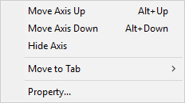

Adding Kinematics to the Model
The machine kinematics must be constructed one axis at a time. Adding the kinematics framework first and then attaching the physical components to this framework afterwards is one suggested methodology. It is also possible to do the reverse, or to build the components and kinematics together.
{kind=link}
The placement of axes in the model navigator is very important. For example, connecting a Y-axis onto an X-axis produces a very different result from the reverse. When Y is connected to X, the Y-axis (and its zero point) move as the X-axis is moved, but moving Y has no effect on X. This configuration would be used for most gantry mills, or for a Y table on X table type machine. The reverse, connecting X on to Y would cause the X-axis origin to be moved when moving the Y-axis. A second example could be a dual C-axis/A-axis rotary head. The A-axis must be connected on to the C-axis to get the correct effect of a change in C causing the A-axis orientation to change.
Unless the model was created from a post or CE, the model axes will not be automatically associated to their corresponding axes in GENER and CERUN. You must make the association using the Axis Mapping tab of the machine’s Properties dialog (e.g., Machine01) in the Model Navigator (the properties dialog is described later in this section).
To summarize: Axes are connected in chains, each one having an effect on all subsequent axes farther (lower) down in the chain, and having no effect on any axes closer (higher) up in the chain. At the highest point is the machine origin. There are usually multiple chains of axes branching out from the machine origin. One chain ends at the tool axis on the spindle face; the other ends at the stock axis (or work piece origin) on the table. The terminology “lower” and “higher” refers to how the axes and components are listed in the Model Navigator.
Before proceeding, you should open the sample models that are included with the software and examine the order in which the axes were defined and the effect this has on machine motion.
{kind=link}
The MHERML50 model shown above, for example, defines a machine with a C-axis rotary table, mounted on an A-axis trunnion table, mounted on the machine base. The Z-axis column is mounted on an X-axis rail, in turn mounted on a Y-axis gantry. For the head assembly, the Y-axis is connected closest to the machine origin. Moving the Y-axis causes the X and Z axes to move, along with the tool. Moving the Z-axis leaves the X and Y axes unchanged. This machine model also defines a number of other axes, which do interesting things like control the doors and position the operator’s pendant. These additional axes follow the same rules.
{kind=link}
The following axes types can be created using the Simulation»Construct Axis menu bar selection (and also from the buttons on the VM Construct toolbar shown circled above):
Linear defines X, Y and Z axes slides
Rotary defines A, B and C axes tables and heads
Curve defines axes which move along a profile
Tool defines where tools are mounted
Stock defines where fixtures and parts are mounted
Head defines where removable head attachments are mounted
A Reference axis doesn’t control motion; it is used to group related components
{kind=link}
All axes share some common parameters (a description of all axes parameters can be found here).
An axis Name should be a short meaningful string. The name is used in the lower right “Axes” window and in the Model Navigator to identify the axis.
The Unit selection by default will match the model units. This defined the units of measure for position and range information.
The Position of an axis defines where its origin is, in respect to the object to which the axis is attached. Axes attached to the base machine are defined in relation to the grid origin. The Direction of an axis can be along one of the major axes. Typically, axes that move the part have a reversed sign and those that move the tool have a normal sign. You can enter a “Custom” orientation, by giving the axis’ XYZ components of positive motion. The Range of an axis defines the limits of its motion. The Default position specifies the axis setting when the model is opened.
You can Slave one axis to another by selecting a parent axis in the drop-down choice list. When an axis is slaved, its position is controlled by the parent axis’ position, multiplied by the signed Scaling factor. A slaved axis will not have its own slider control in the lower right “Axes” window; a slaved axis can only be moved by moving its parent axis.
Axes can be oriented by selecting the Rotate button. This causes a rotation of the XYZ reference axes for the current axis and all objects that are attached to it. Linear and Rotary axes should not need to be rotated; use the Custom direction selection to define a non-standard orientation.
When you add a new axis, it will appear in the Model Navigator attached as a child (i.e., below) the object that was selected in the Navigator when the axis was created. You can move the axis to a new position in the Navigator by first selecting it with the mouse, then, while holding the left-mouse button down, dragging it to a new attachment point before releasing the mouse button. You can change the order of objects listed at any given level by holding the Ctrl key down while pressing the up and down arrow keys.
The axis name will also appear in the lower right “Axes” window. Move the axis slider to see its full range of motion (sliders for rotary axes with unlimited travel sliders are limited to ±405ºdegrees). Press the right-mouse button on the slider to reset the axis to its default position. Press the Reset All Axes button to reset all of the axes to their default positions.
{kind=link}
Axes are listed in the Axes window in the same order that they appear (top down) in the model navigator view. The default ordering of an axis can be changed by selecting the axis in the Axes window and then using the right-mouse context menu Move Axis Up (Alt Up) and Move Axis Down (Alt Down) selections (multiple axes can be moved at a time).
Axes can be hidden using the Hide Axis selection. You might do this, for example, to hide the axes of a tool change mechanism. Hidden axes can be made visible again by first selecting the Show Hidden Axes selection and then toggling the Hide Axis setting of the previously hidden axis.
{kind=link}
On machines with many axes, those having a UHF device for example, it can be helpful to group axes together under different tabs in the Axes window. This can be done by first using the right-mouse context menu New Axis Tab selection to create one or more additional tabs, then selecting the axes to be moved, and finally using the Move to Tab selection to move the selected axes to the tab. Axes tabs can be renamed, reordered, hidden, unhidden and deleted. Axes of a deleted tab will reappear in the Main tab.
The View menu on the top menu-bar also has various selections and associated shortcut keys that control the layout of axes in the Axes window.
Axes tab customization is stored with the model. Hidden axes and tabs can be unhidden at run-time unless the model is Dedicated.
Do the following to add a C-axis table rotary mounted on an X-axis table:
{kind=link}
Step 1: Create the X-axis
Select Simulation»Construct Axis»Linear Axis.
Press the Tab key three times to accept a default position of (0,0,0) for the X-axis origin. The Linear Axis properties dialog will appear.
Select “-X Axis” for the axis direction.
Choose –1500 and 1500 for the Min and Max axis range values.
Press OK.
Enable the kinematics and axes marker displays in the VM Grid toolbar (also controllable from the Simulation»Show menu). Select the lower-right “Axes” window and experiment by moving the X-axis slider. You should see the X-axis origin coordinate frame moving along its range of travel (shown as a narrow blue band) with respect to the grid origin. Expand the model navigator (left hand window) to see the current model tree, which should look like the image above.
{kind=link}
Step 2: Create the C-axis.
Make sure that the “X-axis” entity is selected in the Model Navigator view.
Select Simulation»Construct Axis»Rotary Axis.
Press the Tab key three times to accept a default position of (0,0,0) for the C axis origin. The Rotary Axis properties dialog will appear.
Select “–Z Axis” for rotation axis.
Clear the Use range validation checkbox to have unlimited rotation (no travel limitation) for this axis.
Press OK.
Two axes will now be listed in the lower-right “Axes” window. Move the X-axis and C-axis sliders to see the effect on the C-axis coordinate frame. The model navigator should appear as shown above.
If non-zero values are used for the axes positions, objects attached to them will be in relation to the offset position. The choice to use zero values (as done here) or to define axes at some position (e.g., at the table face) depends on how the physical components of the model will be defined (discussed in the next section).
Step 3: Associate axes with CERUN/GENER
Creating the X-axis and C-axis defines them in the model, but if you ran a post-processor or control emulator with this model, neither of these axes would move. You must manually define the association between model axes and the list of possible axes that GENER and CERUN can control. You do this by selecting the Properties dialog of the top-level machine object (typically “Machine01” unless renamed).
{kind=link}
Right-mouse on the “Machine01” entry and select Property.
Select the Axis Mapping tab.
Double-click in the Model Axis column in the X Axis row and then choose “X Axis” (the model axis name).
Do the same for the C Table axis, choosing “C Table Axis” in the Model Axis drop-down.
Press OK.
Manually associating model axes to their GENER and CERUN counterparts provides flexibility both in axis naming and in the orientation of standard axes. For example, a horizontal machine model might use an X-axis to control the Z-axis column; in which case the Z-axis control axis would map to the X-axis model axis.
On machines with multiple controller channels, there can be multiple axes of the same type. For example, on a 4-axis merging lathe there will be two X axes and two Z axes. In this case, you must create a second channel and assign the model’s secondary turret X and Z axes to the channel 2 X and Z controllable axes.
Lastly, if there are multiple spindles defined in the model, then they must be assigned as milling or turning spindles for the appropriate channel. A milling spindle must also be assigned for VM to correctly simulate boring bars and other 3D tool shapes.
Step 4: Define Reference Home Position
{kind=link}
Many controllers provide G28 or similar reference home codes, which take the machine to preset positions for safety or tool change purposes. Reference positions can be optionally defined in the model for any model axes that have been associated to their GENER and CERUN counterparts. These reference axes positions are then used when GENER or CERUN process home position or tool change codes.
You define reference home positions by selecting the Properties dialog of the top-level machine object (typically “Machine01” unless renamed).
Right-mouse on the “Machine01” entry and select Property.
Select the Reference Positions tab.
Select the “Add Reference” button to add a new reference to the list.
Edit the newly added reference to define a name, type and reference position.
The reference ID is automatically assigned, but can be edited if required. The lowest reference ID is used by default during built-in GENER and CERUN reference home processing, but this can be modified via macro processing.
The reference Name is informational to help you keep track of the difference reference positions, should there be more than one.
The reference Type can be one of Home, Tool or Other. The Home position reference with the lowest ID number will be used by default when GENER or CERUN processes a GOHOME reference home code. The Tool change reference with the lowest ID number will be used by default when GENER or CERUN processes a “special” tool change reference home code. Other reference positions can be used via macro processing.
All model axes associated with GENER or CERUN are listed with each reference position. The current model axes settings are used by default when the reference position is added. The reference position can be edited to any value. If a reference position is not applicable for one or more axes, simply delete the value; “--” will be shown to indicate this.
On machines with multiple controller channels, the reference positions for each channel are defined separately.
The Machine Properties dialog also has a Safety values tab that lists collision enabled objects and their safety amounts. See “Collision Testing” for more details.